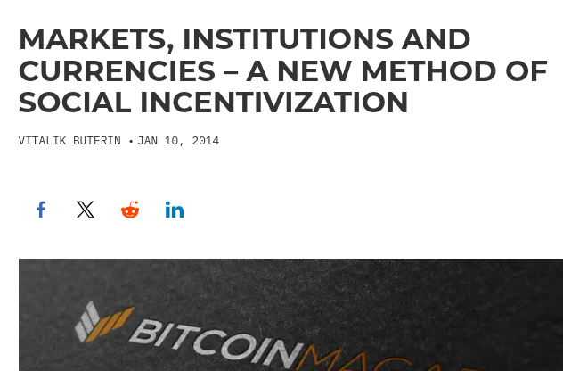
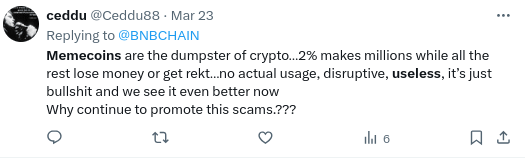
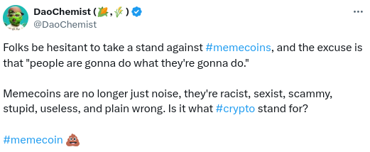
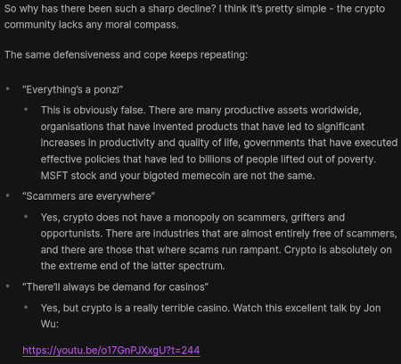
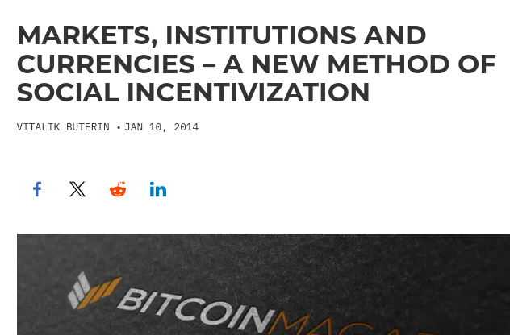
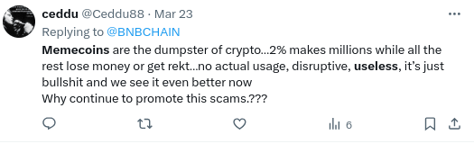
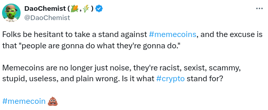
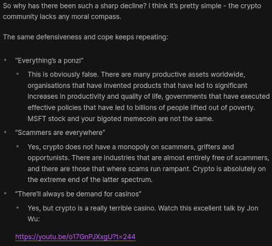

What else could memecoins be?
2024 Mar 29
See all posts
What else could memecoins be?
Ten years ago, two weeks before the Ethereum project was publicly
announced, I published this
post on Bitcoin magazine arguing that issuing coins could be a new
way to fund important public projects. The thinking went: society needs
ways to fund valuable large-scale projects, markets and institutions
(both corporations and governments) are the main techniques that we have
today, and both work in some cases and fail in others. Issuing new coins
seems like a third class of large-scale funding technology, and it seems
different enough from both markets and institutions that it would
succeed and fail in different places - and so it could fill in some
important gaps.

People who care about cancer research could hold, accept and trade
AntiCancerCoin; people who care about saving the environment would hold
and use ClimateCoin, and so forth. The coins that people choose to use
would determine what causes get funded.
Today in 2024, a major topic of discussion in "the crypto space"
appears to be memecoins. We have seen memecoins before, starting from
Dogecoin back in 2015, and "dog coins" were a major topic during the
2020-21 season. This time, they are heating up again, but in a way that
is making many people feel uneasy, because there isn't anything
particularly new and interesting about the memecoins. In fact, often
quite the opposite: apparently a bunch
of Solana memecoins have recently been openly super-racist. And even
the non-racist memecoins often seem to just go up and down in price and
contribute nothing of value in their wake.
And people are upset:


Even long-time Ethereum philosopher Polynya is very
very unhappy:

One answer to this conundrum is to shake our heads and virtue-signal
about how much we are utterly abhorred by and stand against this
stupidity. And to some extent, this is the correct thing to do. But at
the same time, we can also ask another question: if people value having
fun, and financialized games seem to at least sometimes provide that,
then could there be a more positive-sum version of this whole
concept?
Charity coins
Among the more interesting of the coins that I've seen are coins
where a large portion of the token supply (or some ongoing fee
mechanism) is dedicated to some kind of charity. One and a half years
ago, there was a (no longer active) coin called "GiveWell Inu" that
donated proceeds to GiveWell. For the past two years, there has been a
coin called "Fable of the Dragon Tyrant" which supported cultural
projects related to anti-aging research, in addition to other causes.
Unfortunately, both of these are far from perfect: GiveWell Inu seems to
no longer be maintained, and the other one has some highly annoying core
community members that constantly badger me for attention, which
currently makes me unenthusiastic about mentioning them more than once.
More successfully, after I was gifted half the supply of the Dogelon
Mars token, and immediately re-gifted it to the Methuselah Foundation, the
Methuselah Foundation and the Dogelon Mars community seemed to develop a
positive-sum relationship with each other, retroactively converting
$ELON into a charity coin.
It feels like there is an unclaimed opportunity here to try to create
something more positive-sum and long-lasting. But ultimately, I think
even that would create something fundamentally limited, and we can do
better.
Robin Hood games
In principle, people participate in memecoins because (i) the value
might go up, (ii) they feel democratic and open for anyone to
participate, and (iii) they are fun. We can siphon off a large percent
of a memecoin's supply to support public goods that people value, but
that does nothing for the participants directly, and indeed comes at the
expense of (i), and if done poorly at the expense of (ii) too. Can we do
something that instead improves on both for the average
user?
The answer for (iii) is simple: don't just make a coin, make a game.
But make an actually meaningful and fun game. Don't think Candy
Crush on the blockchain; think World of Warcraft on the blockchain.

An "Ethereum
Researcher" in World of Warcraft. If you kill one, you get 15 silver
61 copper, and a 0.16% chance of getting some "Ethereum Relay Data". Do
not attempt in real life.
Now, what about the Robin Hood part? When I go around low-income
Southeast Asian countries, one claim that I often hear is how some
people or their family members were poor before, but then got
medium-rich off of the play-to-earn feature in Axie Infinity in
2021. Of course, Axie Infinity's situation in 2022 was somewhat
less favorable. But even still, I get the impression that if you
take the game's play-to-earn properties into account, on average,
the net financial gains were negative for high-income users but might
(emphasis on might!) have been positive for low-income users. This
seems like a nice property to have: if you have to be financially brutal
on someone, be brutal on those who can handle it, but have a safety net
to keep lower-income users protected and even try to make them come out
better off than they came in.
Regardless of how well Axie Infinity in particular accomplished this,
it feels intuitive that (i) if the goal is to satisfy people's desire to
have fun, we should be making not simple copy-paste coins but rather
more complicated and interesting games, and (ii) games that leave
lower-income players in particular economically better off are
more likely to leave their communities better than they came in. Charity
coins and games could even be combined: one of the features of the game
could be a mechanism where players who succeed at some task can
participate in voting on which charities the issued funds are
distributed to.
That said, making a genuinely fun game is a challenge - see some
negative takes on how well Axie did at being fun, and this
positive take on how they have improved since then. The team that I
personally have the most confidence in to make fun crypto games is 0xPARC, because they have already
succeeded twice (!!) at making crypto games (first Dark Forest, then FrogCrypto) where
players were willing to play entirely for fun, rather than out of a
desire to make money. Ideally, the goal is to make a co-created
environment that leaves all players happy: money is zero sum, but fun
can be positive sum.
Conclusions
One of my personal moral rules is "if there is a class of people or
groups you dislike, be willing to praise at least a few of them that do
the best job of satisfying your values". If you dislike governments
because they violate people's freedoms, perhaps you may find space in
your heart to say something good about the Swiss one. If you dislike
social media platforms for being extractive and encouraging toxic
behavior, but you think Reddit is 2x less bad, say nice things about
Reddit. The opposite approach - to shout "yes, all X are part of the
problem" - feels good in the moment, but it alienates people and pushes
them further toward their own bubble where they will insulate themselves
entirely from any moral appeals you might have in the future.
I think of the "degen" parts of the crypto space in the same way. I
have zero enthusiasm for coins named after totalitarian political
movements, scams, rugpulls or anything that feels exciting in month N
but leaves everyone upset in month N+1. At the same time, I value
people's desire to have fun, and I would rather the crypto space somehow
swim with this current rather than against it. And so I want to
see higher quality fun projects that contribute positively to the
ecosystem and the world around them (and not just by "bringing in
users") get more mindshare. At the least, more good memecoins than bad
ones, ideally those that support public goods instead of just enriching
insiders and creators. But also ideally, making games rather than coins,
and making projects that people enjoy participating in.
What else could memecoins be?
2024 Mar 29 See all postsTen years ago, two weeks before the Ethereum project was publicly announced, I published this post on Bitcoin magazine arguing that issuing coins could be a new way to fund important public projects. The thinking went: society needs ways to fund valuable large-scale projects, markets and institutions (both corporations and governments) are the main techniques that we have today, and both work in some cases and fail in others. Issuing new coins seems like a third class of large-scale funding technology, and it seems different enough from both markets and institutions that it would succeed and fail in different places - and so it could fill in some important gaps.

People who care about cancer research could hold, accept and trade AntiCancerCoin; people who care about saving the environment would hold and use ClimateCoin, and so forth. The coins that people choose to use would determine what causes get funded.
Today in 2024, a major topic of discussion in "the crypto space" appears to be memecoins. We have seen memecoins before, starting from Dogecoin back in 2015, and "dog coins" were a major topic during the 2020-21 season. This time, they are heating up again, but in a way that is making many people feel uneasy, because there isn't anything particularly new and interesting about the memecoins. In fact, often quite the opposite: apparently a bunch of Solana memecoins have recently been openly super-racist. And even the non-racist memecoins often seem to just go up and down in price and contribute nothing of value in their wake.
And people are upset:


Even long-time Ethereum philosopher Polynya is very very unhappy:

One answer to this conundrum is to shake our heads and virtue-signal about how much we are utterly abhorred by and stand against this stupidity. And to some extent, this is the correct thing to do. But at the same time, we can also ask another question: if people value having fun, and financialized games seem to at least sometimes provide that, then could there be a more positive-sum version of this whole concept?
Charity coins
Among the more interesting of the coins that I've seen are coins where a large portion of the token supply (or some ongoing fee mechanism) is dedicated to some kind of charity. One and a half years ago, there was a (no longer active) coin called "GiveWell Inu" that donated proceeds to GiveWell. For the past two years, there has been a coin called "Fable of the Dragon Tyrant" which supported cultural projects related to anti-aging research, in addition to other causes. Unfortunately, both of these are far from perfect: GiveWell Inu seems to no longer be maintained, and the other one has some highly annoying core community members that constantly badger me for attention, which currently makes me unenthusiastic about mentioning them more than once. More successfully, after I was gifted half the supply of the Dogelon Mars token, and immediately re-gifted it to the Methuselah Foundation, the Methuselah Foundation and the Dogelon Mars community seemed to develop a positive-sum relationship with each other, retroactively converting $ELON into a charity coin.
It feels like there is an unclaimed opportunity here to try to create something more positive-sum and long-lasting. But ultimately, I think even that would create something fundamentally limited, and we can do better.
Robin Hood games
In principle, people participate in memecoins because (i) the value might go up, (ii) they feel democratic and open for anyone to participate, and (iii) they are fun. We can siphon off a large percent of a memecoin's supply to support public goods that people value, but that does nothing for the participants directly, and indeed comes at the expense of (i), and if done poorly at the expense of (ii) too. Can we do something that instead improves on both for the average user?
The answer for (iii) is simple: don't just make a coin, make a game. But make an actually meaningful and fun game. Don't think Candy Crush on the blockchain; think World of Warcraft on the blockchain.
An "Ethereum Researcher" in World of Warcraft. If you kill one, you get 15 silver 61 copper, and a 0.16% chance of getting some "Ethereum Relay Data". Do not attempt in real life.
Now, what about the Robin Hood part? When I go around low-income Southeast Asian countries, one claim that I often hear is how some people or their family members were poor before, but then got medium-rich off of the play-to-earn feature in Axie Infinity in 2021. Of course, Axie Infinity's situation in 2022 was somewhat less favorable. But even still, I get the impression that if you take the game's play-to-earn properties into account, on average, the net financial gains were negative for high-income users but might (emphasis on might!) have been positive for low-income users. This seems like a nice property to have: if you have to be financially brutal on someone, be brutal on those who can handle it, but have a safety net to keep lower-income users protected and even try to make them come out better off than they came in.
Regardless of how well Axie Infinity in particular accomplished this, it feels intuitive that (i) if the goal is to satisfy people's desire to have fun, we should be making not simple copy-paste coins but rather more complicated and interesting games, and (ii) games that leave lower-income players in particular economically better off are more likely to leave their communities better than they came in. Charity coins and games could even be combined: one of the features of the game could be a mechanism where players who succeed at some task can participate in voting on which charities the issued funds are distributed to.
That said, making a genuinely fun game is a challenge - see some negative takes on how well Axie did at being fun, and this positive take on how they have improved since then. The team that I personally have the most confidence in to make fun crypto games is 0xPARC, because they have already succeeded twice (!!) at making crypto games (first Dark Forest, then FrogCrypto) where players were willing to play entirely for fun, rather than out of a desire to make money. Ideally, the goal is to make a co-created environment that leaves all players happy: money is zero sum, but fun can be positive sum.
Conclusions
One of my personal moral rules is "if there is a class of people or groups you dislike, be willing to praise at least a few of them that do the best job of satisfying your values". If you dislike governments because they violate people's freedoms, perhaps you may find space in your heart to say something good about the Swiss one. If you dislike social media platforms for being extractive and encouraging toxic behavior, but you think Reddit is 2x less bad, say nice things about Reddit. The opposite approach - to shout "yes, all X are part of the problem" - feels good in the moment, but it alienates people and pushes them further toward their own bubble where they will insulate themselves entirely from any moral appeals you might have in the future.
I think of the "degen" parts of the crypto space in the same way. I have zero enthusiasm for coins named after totalitarian political movements, scams, rugpulls or anything that feels exciting in month N but leaves everyone upset in month N+1. At the same time, I value people's desire to have fun, and I would rather the crypto space somehow swim with this current rather than against it. And so I want to see higher quality fun projects that contribute positively to the ecosystem and the world around them (and not just by "bringing in users") get more mindshare. At the least, more good memecoins than bad ones, ideally those that support public goods instead of just enriching insiders and creators. But also ideally, making games rather than coins, and making projects that people enjoy participating in.